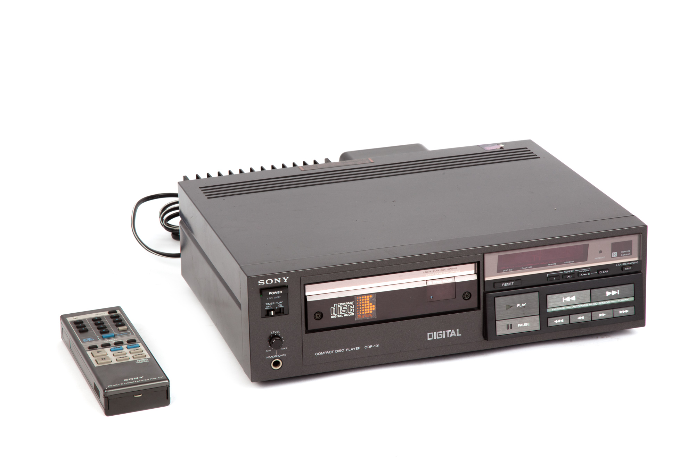

The first CD lector
The first CD player was the CDP-101 and cost was $1,500
The player was released in Japan at the end of 1982 along with 50 CDs,
including Joel's 52nd Street, Toto's Turn Back, Pink Floyd's Wish You Were Here, Michael Jackson's Off the Wall, etc..
The first CD lector
The first CD player was the CDP-101 and cost was $1,500.
The player was released in Japan at the end of 1982 along with 50 CDs,
including Joel's 52nd Street, Toto's Turn Back, Pink Floyd's Wish You Were Here, Michael Jackson's Off the Wall, etc..
Decline of CD
Over the years and the arrival of the 2000s were devastating for the CD-Rom which was replaced by the Usb drive.
In general, CDs had an exponential drop in sales all over the world.
Decline of CD
Over the years and the arrival of the 2000s were devastating for the CD-Rom which was replaced by the Usb drive.
In general, CDs had an exponential drop in sales all over the world.

Multimedia
The CD-ROM was the first device able to meet the three features that allow multimedia:
large storage capacity, fast access to multimedia information, easy manipulation of multimedia information.
Multimedia
The CD-ROM, was the first device able to meet the three features that allow multimedia:
large storage capacity, fast access to multimedia information, easy manipulation of multimedia information.